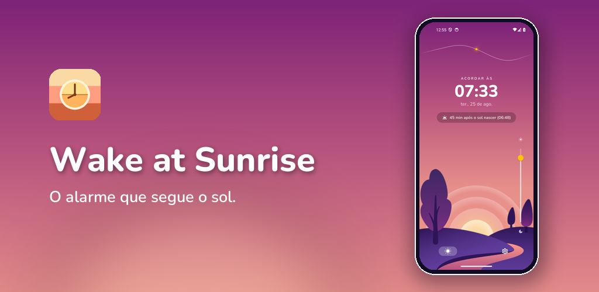
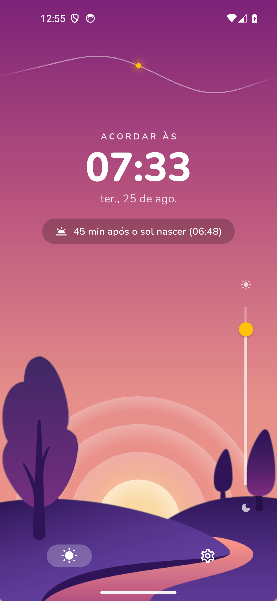
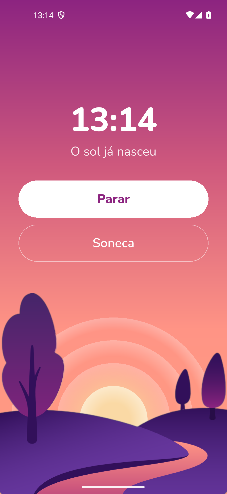
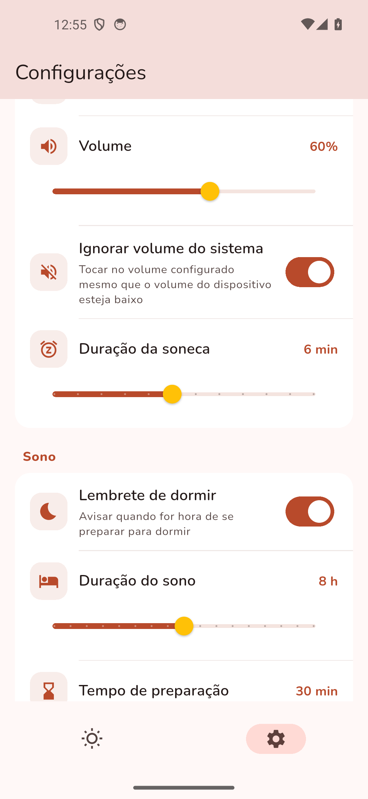

Kit de imprensa
Atualizado em 18 de novembro de 2026 ·
O Wake at Sunrise é um despertador Android que toca no nascer do sol real do lugar onde você está — calculado no próprio celular — e acompanha esse horário um ou dois minutos por dia ao longo das estações e entre fusos horários. O usuário escolhe acordar no nascer do sol ou quantos minutos antes ou depois quiser. É gratuito, com um Premium opcional de sons suaves de despertar e lembretes da hora de dormir; não tem conta nem anúncios, e a localização nunca sai do aparelho. Foi criado por um desenvolvedor independente.
| Nome | Wake at Sunrise |
|---|---|
| Desenvolvedor | Desenvolvedor independente |
| Plataforma | Android 7.0 ou superior · iOS em desenvolvimento |
| Lançamento | 16 de novembro de 2026, no Google Play |
| Preço | Gratuito · Premium opcional, anual ou vitalício |
| Idiomas | Inglês, português (Brasil), alemão, sueco, norueguês, dinamarquês, finlandês, holandês, espanhol, russo |
| Privacidade | Sem conta, sem anúncios, sem rastreamento; nascer do sol calculado no aparelho |
Disponível noGoogle Play
Em breve naApp Store
Imagens









Links
Contato
Para entrevistas, códigos de avaliação ou qualquer outro assunto, escreva para o e-mail do desenvolvedor.